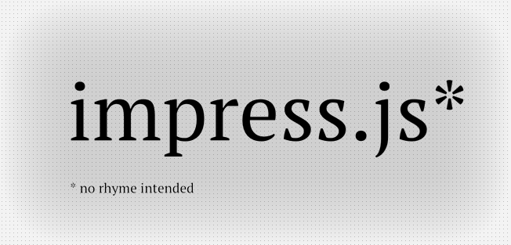
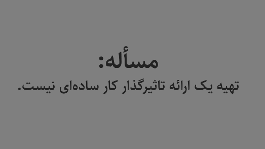
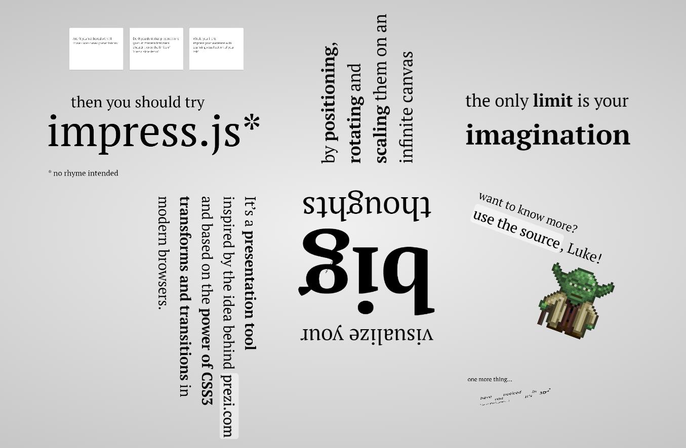
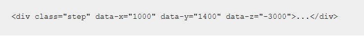
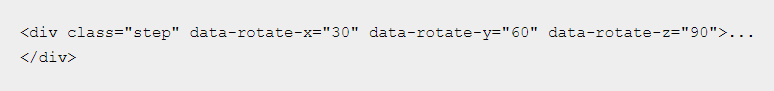
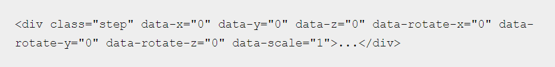

ارائه مطالب با impress. js
استاد محترم : جناب آقای بینش طریق
تهیه کننده : سارا زارع پور
impress.js چیست؟
(impress.js) یک فریم ورک هست که توسعه دهندگان می توانند از آن برای ایجاد ارائه هایی که در یک مرورگر وب اجرا می شوند استفاده کنند چیزی که پاورپوینت نمیتواند شبیه آن را ایجاد کند.
impress.js ارائه را به یک بوم سه بعدی در فضای بینهایت تبدیل می کند.
شما بینندگان را در یک تور فضایی در بین ایدهها هدایت می کند.
تنها محدودیت شما در impress.js خلاقیت شماست.
پیش نیازها :
- دانش ابتدایی در HTML5
- دانش ابتدایی در CSS3
- دانش ابتدایی در JavaScript
- مقدار زیادی خلاقیت و ذوق
حال بگذارید سری به سایت impress.js بزنیم تا دموی آن را مشاهده کنیم.
 فایلهای ارائه impress.js در حقیقت یک فایل HTML است.
برای جابجایی بین اسلایدها از کتابخانه جاوااسکریپت impress.js استفاده می کند.
روش این نرم افزار بدین گونه است که نوشتهها، تصاویر، نمودارها و بقیه چیزها در فضای سهبعدی در هر زاویهای
و با هر اندازه بزرگنمایی که بخواهید قرار میدهید و بیننده را بین آنها حرکت میدهید و آنها را یک به یک نمایش میدهید.
برای اضافه کردن هر چیزی به پرزنتیشن خود میتوانید از تگهای HTML5 استفاده کنید. مثل div, section,header,footer و غیره.
ولی حتما باید آن را در کلاس step قرار دهید.
برای تعیین موقعیت شیء در فضای سه بعدی، مختصات نقطه مرکز آن شیء را در قالب سه پارامتر زیر مشخص کنید:

- مقدار data-x طول نقطه مرکز شیء بر روی محور افقی که روی صفحه مانیتور از چپ به راست میباشد.
- مقدار data-y عرض نقطه مرکز شیء بر روی محور عمودی که روی صفحه مانیتور از بالا به پایین میباشد.
- مقدار data-z ارتفاع نقطه مرکز شیء بر روی محور افقی که عمود بر صفحه مانیتور از داخل به بیرون (به سمت کاربر) میباشد.
اگر بخواهید شیء را در محل خود بچرخانید از پارامترهای زیر استفاده کنید:

- مقدار data-rotate-x زاویه دوران حول محور x است.
- مقدار data-rotate-y زاویه دوران حول محور y است.
- مقدار data-rotate-z زاویه دوران حول محور z است. (برای این نوع دوران میتوانید از پارامتر data-rotate نیز استفاده نمایید.)
اگر بخواهید شیء مورد نظرتان را از اندازه واقعی خود بزرگتر یا کوچکتر نمایید از پارامتر data-scale استفاده کنید.

شما می توانید در یک کلاس step از کلیه هفت پارامتری که گفته شد همزمان استفاده نمایید.
اگر هریک از پارامترها را تعیین نکرده باشید، مقدار پیش فرض آن توسط کامپیوتر درنظر گرفته میشود.
مقدار پیش فرض تمامی پارامترها صفر است غیر از data-scale که مقدار پیش فرض آن یک میباشد.
برای درک بهتر این پارامترها بگذارید شما را به صفحه ای دیگر ببرم
شما می توانید در پایان ارائه خود با یک نگاه کلی به تمام اسلایدهای خود، سخنرانی خود را تمام کنید.
برای اینکار تنها کافیست از تگی با آیدی overview استفاده کنید.
برای اینکه پیام مناسبی بر روی صفحه ظاهر شود،
کد زیر را به فایل HTML خود اضافه می کنیم :
منابع :
- سایت github.com/impress/impress.js
- سایت impress.js.org
- سایت 1stwebdesigner.com
- سایت www.packtpub.com
- کانال یوتیوب Red Stapler
- کتاب Building Impressive Presentations with Impress.js